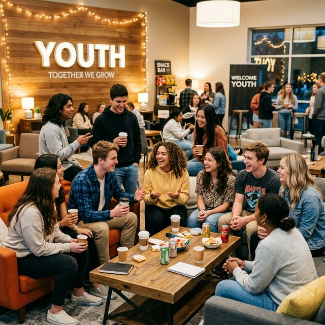
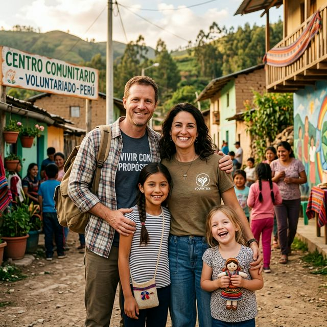
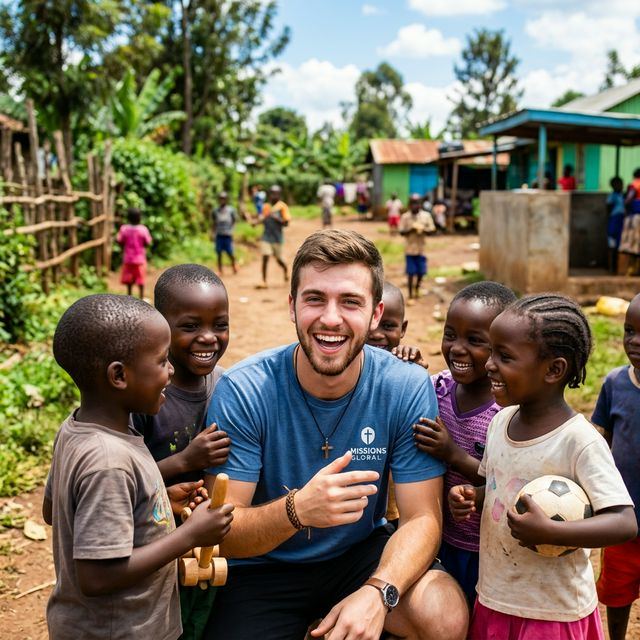
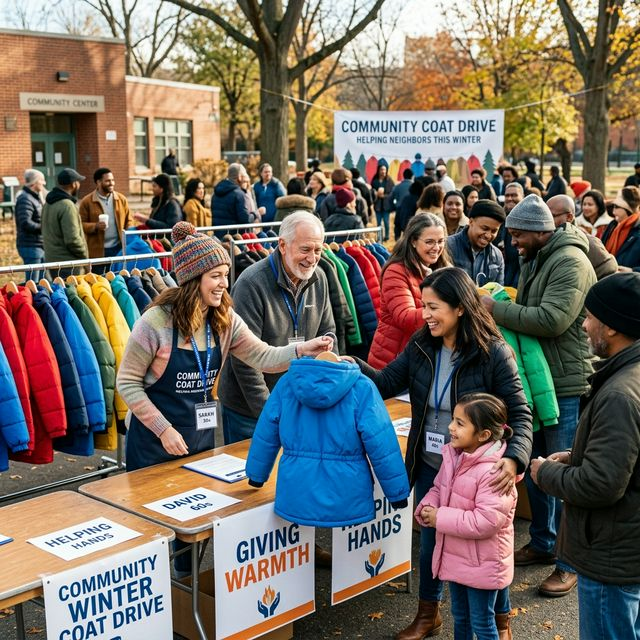

Eventos
Gran Encuentro de Jóvenes 2026
Un fin de semana lleno de música, juegos y crecimiento espiritual. ¡Inscríbete hoy!
Leer másEl portal oficial de Misiones de la Región 3 (UAD Argentina). Descubre lo que Dios está haciendo en el campo, apoya a nuestros misioneros y únete en oración desde un solo lugar.
Mantenemos este apartado para emergencias puntuales de nuestros misioneros (ej. tratamientos médicos inesperados, traslados urgentes). ¡Tu ayuda hoy marca la diferencia de una vida o servicio!
Nuestros misioneros están recorriendo el territorio conectando con la gente y compartiendo sobre la obra.
Familia Isa y José visitando comunidades rurales en Salta y Jujuy, compartiendo el mensaje y asistiendo con insumos.
Recorrido por diferentes iglesias locales en la frontera compartiendo testimonios del campo transcultural.
Las últimas novedades y el seguimiento del trabajo de nuestros enviados, todo concentrado en este lugar.

Amazonía, Brasil
Trabajando en educación preescolar comunitaria y asistencia médica en zonas ribereñas.

Norte de África
Iniciativas de agua potable e integración de jóvenes a través de programas deportivos.
Sabemos que hay momentos difíciles donde el peso parece demasiado grande. Queremos unirnos a ti en oración.
Mantente al tanto de la obra misionera: testimonios, fotos e informes directos de nuestros misioneros (sin tener que ir a sus redes).

Un fin de semana lleno de música, juegos y crecimiento espiritual. ¡Inscríbete hoy!
Leer más
Gracias a sus donaciones logramos entregar más de 500 abrigos a personas en situación de calle.
Leer testimonio